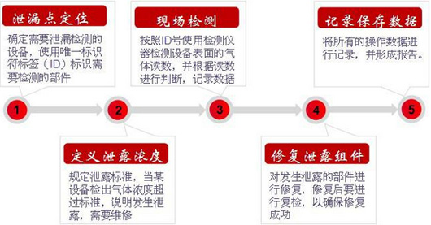

锦钰业务
Jin Yu Bussiness
环境检测Environmental Testing
1、环境影响评价检测
环境影响评价是指对规划和建设项目实施后可能造成的环境影响进行分析、预测和评估，提出预防或者减轻不良环境影响的对策和措施，进行跟踪监测的方法与制度，环境影响评价监测是环境影响评价必需的基础工作，是环境影响评价工作中最重要的一个环节。中测检测可以为环境影响评价工作编制监测方案、实施环境影响评价监测并为客户提供真实可信的环境影响评价监测报告。
本公司涉及环境影响评价监测领域包括轻工、纺织、化纤、化工、石化及医药、机械、电子、火电、建筑、市政公用工程、建材、水利、交通、水电、区域开发、机场等行业及生态项目。
2、环境及污染源调查检测
环境及污染源调查监测是环境保护最重要的一项基础工作，它与人类生活、经济社会可持续发展关系密切。环境及污染源调查监测包括环境质量监测、车间（室内)空气监测、排放口污染物监测（包括企业自测）、污染物追踪监测及调查、农产品基地和土壤环境质量及有毒有害污染物监测等。中测检测可以根据客户的监测目的和要求，编制监测方案并按要求实施监测工作，为客户提供真实可信的监测报告。
本公司涉及环境及污染源调查监测领域包括生产及服务企业、社会团体、政府组织和其它机构。
3、工程竣工验收检测
建设项目竣工环境保护验收是指建设项目竣工后，环境保护行政主管部门根据《建设项目竣工环境保护验收管理办法》（国家环境保护总局第13号令）规定，依据环境保护验收监测或调查结果，并通过现场检查等手段，考核该建设项目是否达到环境保护要求的活动，是建设项目环境管理的一项重要手段。中测检测可以为建设项目竣工环境保护验收工作编制监测和调查方案、实施建设项目竣工环境保护验收监测和调查,为管理部门和企业客户提供真实可信的建设项目竣工环境保护验收监测和调查报告。
本公司涉及建设项目竣工环境保护验收监测、调查领域包括轻工、纺织、化纤、化工、石化及医药、机械、电子、火电、建筑、市政公用工程、建材、水利、交通、水电、区域开发、机场等行业及生态项目。
4、环境管理体系认证检测
环境管理体系认证是引导组织按照PDCA的模式建立环境管理的自我约束机制，从最高领导到每个职工都能以主动、自觉的精神处理好自身发展与环境保护的关系，不断改善环境绩效，进行有效的污染防治，最终实现组织的良性发展的管理体系的一种认证制度，对组织的环境、污染物排放等指标进行监测是认证过程中的一项重要环节。中测检测可以为环境管理体系认证工作编制监测方案、实施环境和污染源的监测和调查,为企业客户和认证机构提供真实可信的监测和调查报告。
本公司涉及环境管理体系认证监测领域包括生产及服务企业、社会团体、政府组织和其它机构。
5、清洁生产审核检测
清洁生产审核是指按照一定程序，对生产和服务过程进行调查和诊断，找出能耗高、物耗高、污染重的原因，提出减少有毒有害物料的使用、产生，降低能耗、物耗以及废物产生的方案，进而选定技术经济及环境可行的清洁生产方案的过程。中测检测可以根据清洁生产审核要求和生产、服务企业特点，编制监测方案并实施监测和调查诊断，为审核机构和客户提供真实可信的监测和调查报告。
本公司涉及清洁生产审核检测监测领域包括生产及服务企业、社会团体、政府组织和其它机构。
室内空气检测Indoor air testing

“室内”主要指居室内，室内空气污染是指由于各种原因导致的室内空气中有害物质超标，进而影响人体健康的室内环境污染行为。有害物包括甲醛、苯、氨、放射性氡 等。随着污染程度加剧，人体会产生亚健康反应甚至威胁到生命安全。是日益受到重视的人体危害之一。
室内空气污染的定义是：室内空气污染是指在封闭空间内的空气中存在对人体健康有危害的物质并 且浓度已经超过国家标准达到可以伤害到人的健康程度，我们把此类现象总称为室内空气污染。并不主要指居室。
锦钰检测可以根据客户的检测目的和要求，编制检测方案并按要求实施检测工作，为客户提供真实可信的检测报告。
LDAR泄露检测lard leak detection
LDAR：是泄露检测与修复（Leak Detection And Repair）的英文词头缩写，其原理是通过系统的方法对潜在泄漏源（阀门、法兰、泵密封等）进行常规化巡检和仪器检测相结合，以定点并及时有效的维修泄漏源，阻止管道内气体泄露。
LDAR-是使用专门的气体检测仪器进行检测，确定泄漏的设备，通过修理降低无组织排放的一项工作自已。

-
开展工作优势：
-
工业企业设备的泄漏大多为挥发性有机物（VOCs）和挥发性有毒污染源（VHAPs）；
-
通过监测，有效减少或降低设备的泄漏；
-
增加工厂职工和操作人员安全性；
-
降低周边社区的化学污染暴露危险；
-
减少污染物排放，满足国家地方标准，有利于企业树立环保形象；
-
减少了原辅材料、产品等泄漏损失，减少了经济损失，增加了经济收入；
-
项目的成果：给园区内的企业带来节约成本的经济利益，也降低了其对周围环境的负面影响作用，具有双赢的效果。